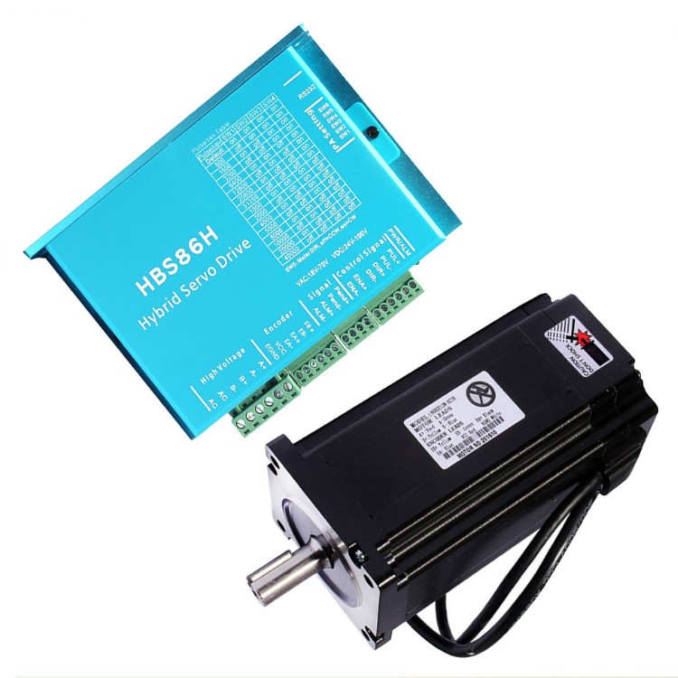

Features
- Digital Lead Screw – it is a replacement for the mechanical lead
screw, which usually consists of a gearbox with a limited number of
settings. Digital lead screw can be set with unlimited number of pitches
within its operating range.
- Fully automatic thread cutting with multiple passes and variable
depths.
This operation includes right and left threads, outer and inner threads with variable pitches. - Fully automated turning of cones (tapers)
- Tapered outer and inner threads
- Multi-start threads
- Refreshing existing threads
- Turn to diameter function
- Divider
- Simple pass function
- The converted lathe retains the ability to operate manually
- The system is controlled from your PC via TCP/IP connection
- No programming skills is required to operate
- Easy lathe conversion
- Control circuitry is opto-isolated and safe
- Public .NET API for extending system functionality
Documents
Fusce vehicula magna at turpis tempus, non sodales metus gravida. Sed venenatis vehicula magna, eget consequat ipsum varius eu. Nunc mattis dignissim nisi eu euismod. Curabitur tempor fermentum aliquam. Praesent volutpat dui vel augue volutpat, posuere interdum neque pellentesque.
Read More